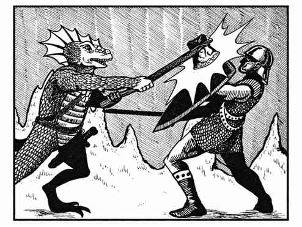
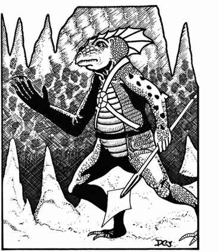
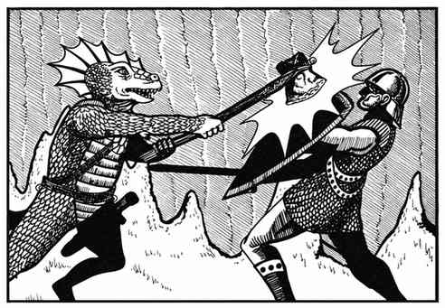
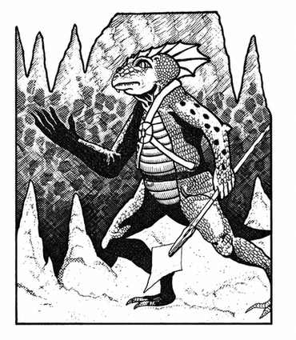

穴居怪 · Troglodyte



 |
|
穴居怪是生活在地下的爬虫类人形生物，憎恨人类，目标是杀死遇到的一切人类，拥有优秀的 9 寸红外视觉。每 10 名中有 1 名 3 骰首领；每 20 名再有 2 名 4 骰首领；若遇到 60 名以上，还会有 6 骰酋长和 2–8 名 3 骰卫士。
部落巢穴通常是带有小型居室的大洞穴，雌性数量与雄性相等，雌性按 1+1 骰怪物战斗，另有幼体和卵。穴居怪能用爪牙攻击，但其中 50% 使用武器：25% 使用两支标枪，10% 石战斧，10% 石钉头锤，5% 剑。标枪为大而带羽的飞镖，穴居怪使用时命中 +3，造成 2–8 点伤害；它们不穿护甲。
战斗时穴居怪会分泌极其恶心的气味。包括矮人、精灵、侏儒、半精灵和半身人在内的人类若未通过毒素豁免，会产生反感，每轮力量降低 1 点，持续 1–6 轮，效果结束后再持续 10 轮。穴居怪拥有变色能力，可在灰、棕、绿之间改变皮肤颜色；除非愤怒并散发臭味，否则它们以 1–4 突袭，并会在遭遇不利时用变色隐藏。